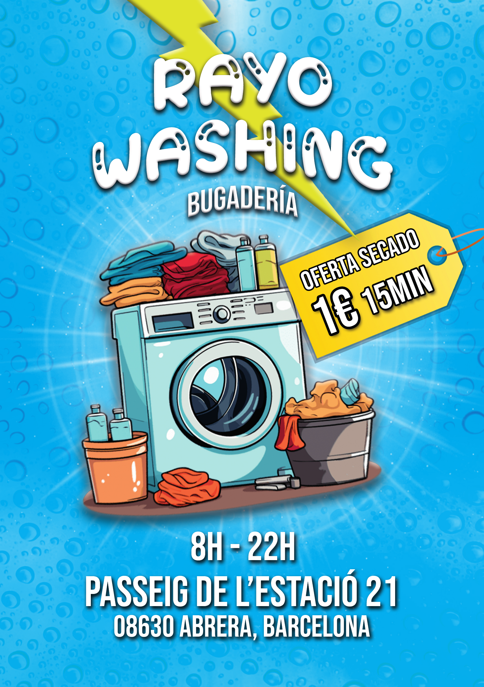
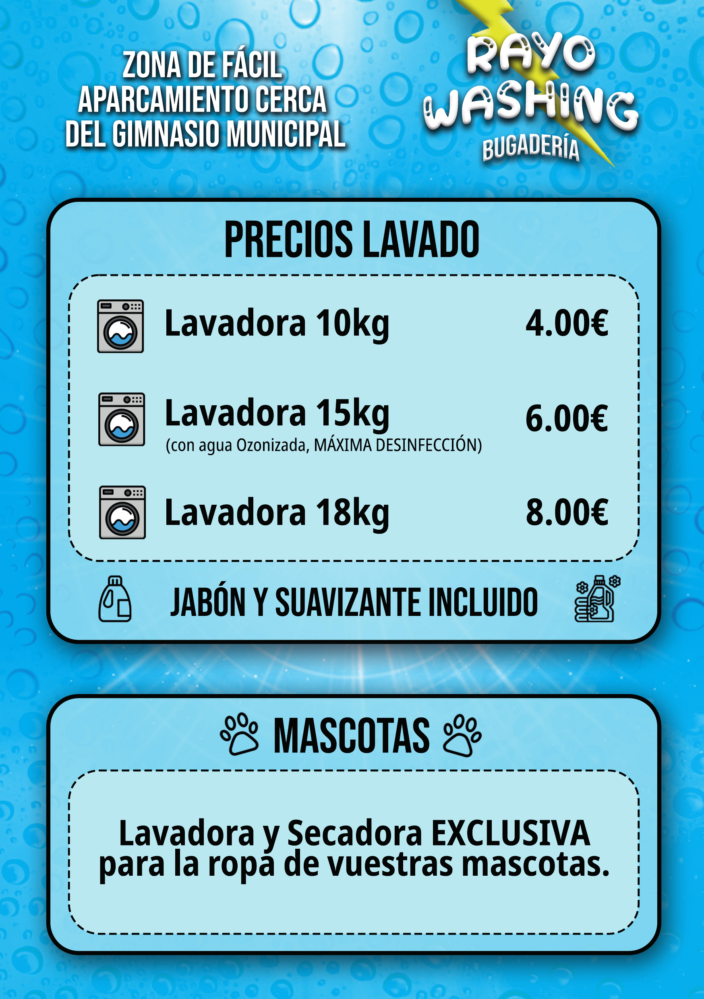

Lavado autoservicio
Ropa diaria, mantas y prendas grandes.

Lavandería autoservicio en Abrera
Lavandería autoservicio en Abrera para tu ropa, edredones y textiles de mascotas.
Limpieza rápida, cómoda y cercana para el día a día.

El local real
Una lavandería autoservicio local con lavadoras, secadoras y zona de trabajo clara para ropa diaria, edredones, mantas y textiles de mascotas.
Fotos reales
Máquinas visibles, zona amplia y un espacio claro para hacer la colada con comodidad.


Carteles reales
Horario, dirección, precios y servicios tal como aparecen para los clientes.


Ropa, hogar y cuidados extra
Soluciones cómodas para lavar, secar y cuidar prendas de uso diario, textiles grandes y ropa del hogar.
Ropa diaria, mantas y prendas grandes.
Ropa lista de forma rápida.
Mantas, camas, toallas y accesorios.
Arreglos y planchado para tus prendas.
Simple y rápido
Ven, elige tu máquina y sigue con tu día con una experiencia práctica y directa.
Ropa diaria, mantas, edredones o textiles de mascotas.
Selecciona la máquina que mejor encaja con tu carga.
Un proceso pensado para ser práctico y directo.
Lista para volver a casa fresca y cuidada.
Más servicios
Cercanía y confianza
Ubicación
Encuéntranos fácilmente y ven cuando necesites lavar, secar o arreglar tu ropa.
Contacto
Contacta con Rayo Washing y te ayudaremos encantados.